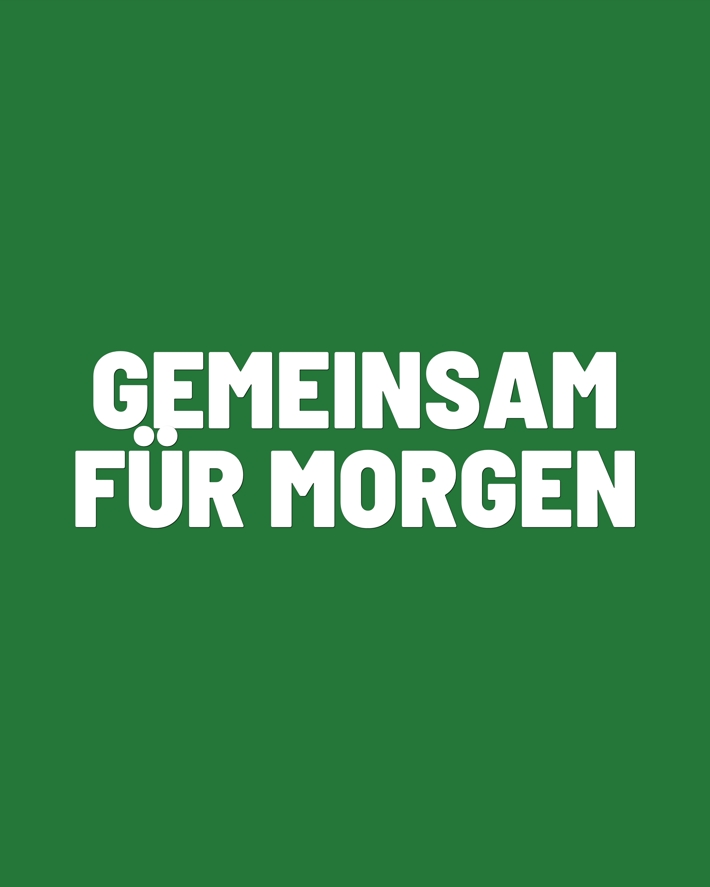
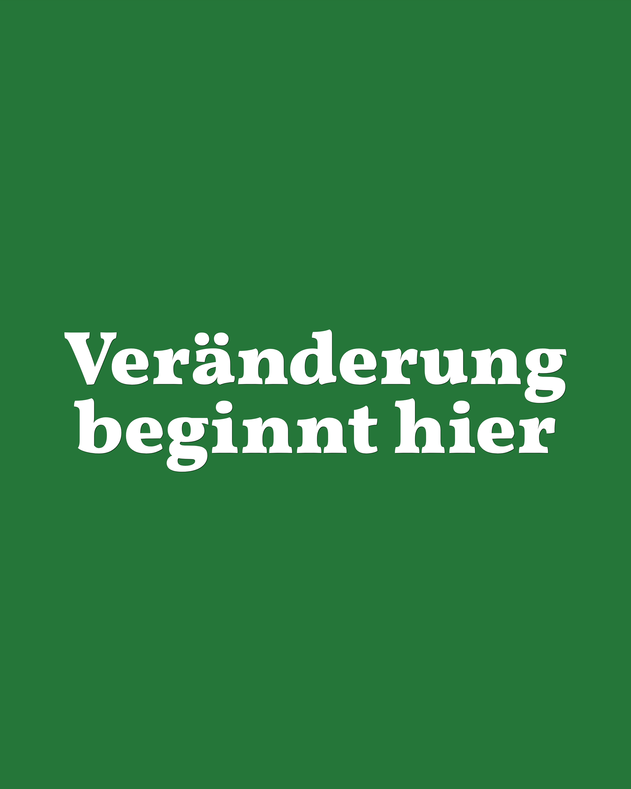

00Schriften
Zwei Schriften, zwei Aufgaben. Im Zweifel die Standardschrift.
Der Bildgenerator bietet im Textschritt zwei Schriften an. Diese Seite zeigt, wann welche passt.
Beide Schriften kommen aus dem Grünen Schriftsystem. Die Standardschrift trägt fast alles — Überschriften wie Fließtext. Die betonte Serifenschrift ist die Ausnahme für Zitate und einzelne Akzente.
01Standardschrift
Die Voreinstellung — passt für die allermeisten Sujets.
Die kräftige, schmal laufende Standardschrift (technisch: Barlow Semi Condensed) ist die Arbeitsschrift des Bildgenerators. Sie ist gut lesbar, wirkt klar und plakativ und funktioniert von der großen Schlagzeile bis zum kurzen Fließtext.
Für Schlagzeilen und Kernbotschaften.
Der hohe Schriftschnitt füllt die Fläche und bleibt auch klein noch lesbar.
Für längeren Text und Aufzählungen.
Ruhiges, gleichmäßiges Schriftbild — der Inhalt steht im Vordergrund, nicht die Schrift.

Faustregel
Wenn du unsicher bist, nimm die Standardschrift. Sie ist die Voreinstellung und passt für nahezu jedes Sujet.
02Serifenschrift
Der Akzent — sparsam einsetzen, sonst verliert er seine Wirkung.
Die betonte Serifenschrift (technisch: Vollkorn) bringt einen wärmeren, persönlicheren Ton. Sie eignet sich für Zitate und einzelne hervorgehobene Wörter — nicht für ganze Textblöcke.
Für Zitate und persönliche Aussagen.
Die Serifen geben dem Satz eine ruhige, menschliche Note.
Für einzelne Akzente.
Ein hervorgehobenes Wort oder eine kurze Aussage — als bewusster Kontrast zur Standardschrift.

Sparsam einsetzen
Die Serifenschrift wirkt als Akzent. Auf ganzen Flächen oder in langem Fließtext verliert sie diese Wirkung — dort bleibt die Standardschrift die bessere Wahl.
03Weiter
Die Schrift wählst du im Bildgenerator direkt im Textschritt aus.